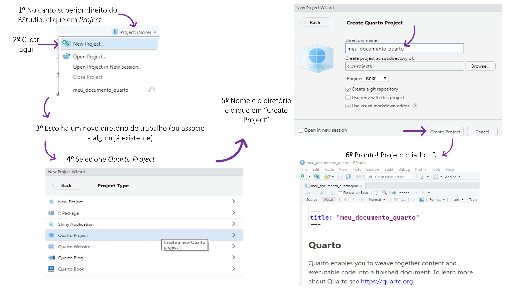
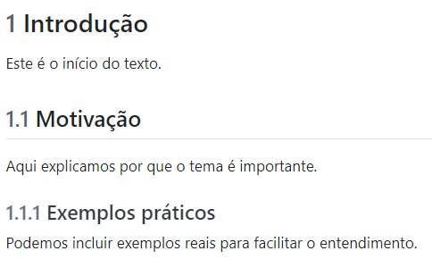
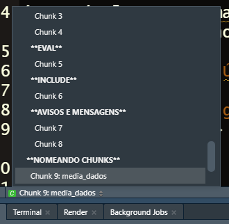
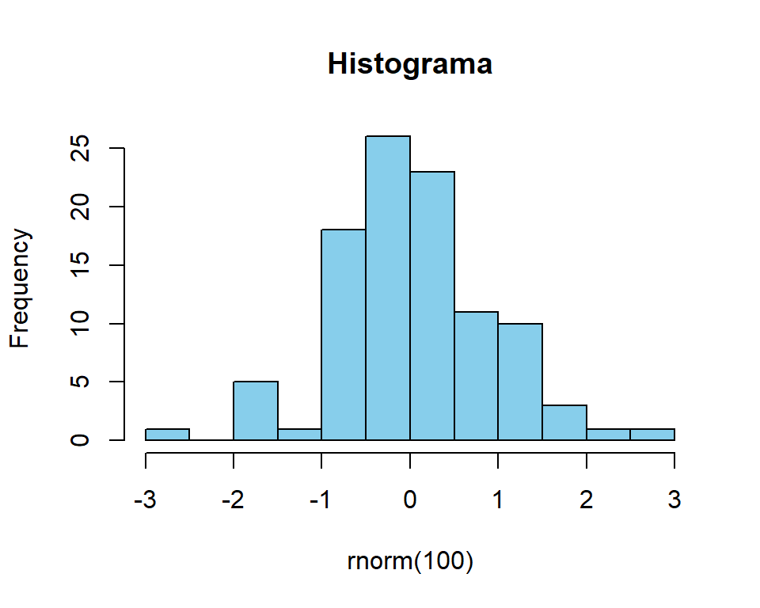

Código
x <- 1:5
mean(x)[1] 3quartoO quarto é uma ferramenta moderna e poderosa de publicação de documentos e relatórios, desenvolvida pela equipe da RStudio (agora chamada Posit) no ano de 2022. O quarto permite que você escreva documentos misturando texto, código e resultados — tudo em um só arquivo.
É como escrever um relatório no Word ou Google Docs, mas com uma diferença fundamental: os resultados, tabelas, gráficos e análises são gerados automaticamente a partir do código. Isso garante reprodutibilidade, economia de tempo e maior confiabilidade.
Se você já ouviu falar do
R Markdown, criado em 2014, oquartoé sua evolução direta — mais moderno, mais flexível e voltado não só paraR, mas também para outras linguagens comoPythoneJulia.
Markdowné uma forma simples de escrever texto formatado. É muito mais leve que editores de texto tradicionais, e ideal para programadores, cientistas e analistas.
quarto?Há várias razões para usarmos o quarto, especialmente no ensino e na prática de ciência de dados, estatística e análise de dados:
Você escreve o relatório uma vez, e ele sempre será gerado com os dados e análises atualizados. Isso é essencial em ambientes científicos e corporativos.
Se seus dados mudam, você não precisa copiar e colar gráficos ou resultados em outro documento. O quarto atualiza tudo automaticamente com um simples clique.
Código, texto explicativo e visualizações ficam juntos em um único arquivo .qmd. Isso ajuda no aprendizado, na organização dos projetos e na documentação das análises.
Com o quarto, você pode gerar:
Daremos mais destaque ao formato HTML. Mas outros formatos podem ser utilizados conforme a sua necessidade. No formato pdf, por exemplo, para que a renderização funcione corretamente a partir do R no seu computador, é necessário ter uma distribuição LaTeX instalada, como o TinyTeX (recomendada pela RStudio), TeX Live (Linux), MikTeX (Windows) ou MacTeX (macOS). Para instalar o tinytex, compile estes comandos no R:
install.packages("tinytex")
tinytex::install_tinytex()quartoquarto no RStudio.Não é preciso ser especialista para usar o
quarto. Se você já sabe escrever código noRe consegue explicar os resultados com suas próprias palavras, então você já tem tudo o que precisa para começar.
A partir de agora, você aprenderá uma das ferramentas mais úteis para transformar análises em documentos bonitos, organizados e profissionais.
quartoEste documento tem como objetivo ensinar passo a passo como instalar o quarto, uma ferramenta moderna para geração de relatórios que une texto, código e resultados em um só lugar.
Antes de instalar o quarto, certifique-se de que os seguintes componentes estão instalados em seu computador:
Verifique a versão do R e RStudio instalado em seu computador antes de instalar o
quarto. Para isso, digiteversionno console ou vá até o menuhelp>about.
quartoAbra o navegador e vá para:
👉 https://quarto.org/docs/get-started/
Escolha a versão de download de acordo com seu sistema operacional:

Execute o instalador baixado e siga as instruções da tela.
Depois de instalar o quarto, feche e reabra o RStudio. No console do RStudio, digite:
quarto::quarto_path()Se aparecer um caminho válido, está tudo certo!
Caso o RStudio retorne erro dizendo que a função quarto::quarto_path() não existe, significa que o pacote quarto ainda não está instalado no R. Para instalar o pacote, utilize o seguinte comando:
install.packages("quarto")Depois de instalar o pacote, repita o teste apontado em 4.2.3.
Tudo começa com o RStudio, que é a nossa interface principal para escrever código, texto e gerar relatórios. Se estiver usando um computador com o quarto já instalado, basta abrir o RStudio normalmente.
Antes de construir seu primeiro relatório, o primeiro passo é criar um projeto. São apenas seis passos simples:

Referência: https://quarto.org/docs/get-started/Assim, tem-se o nosso projeto e primeiro documento criados. No diretório onde foi alocado o seu projeto, note que foram criados os seguintes arquivos:

_quarto.yml: Configuração Global
meu_documento_quarto.qmd: Documento Quarto Markdown
Markdown e código executável (R, Python, etc.).meu_documento_quarto.Rproj: Projeto RStudio
.Rproj, o RStudio automaticamente carrega o contexto correto para o seu projeto..qmdNo
R, um arquivo.qmdé umQuarto Markdown document— ou seja, um documento feito noQuarto, que é a evolução doR Markdown.
Para entender bem o funcionamento deste arquivo, vamos dividí-lo em três partes:
yamlO yaml (pronuncia-se “ié-mel” ou “yá-mel”) é uma linguagem de marcação usada para descrever configurações de forma simples, legível e organizada. É a parte entre as linhas com três hifens no início do arquivo:

Esse cabeçalho diz como o documento será produzido: título, autor, formato, tema, sumário, numeração etc. Isto é, são as especificações do relatório. Os comandos escritos entre essas linhas não aparecem como texto no relatório final (com algumas exceções, como o título e o autor).
Os comandos do cabeçalho são baseados em pares chave-valor
Cada linha deverá seguir o formato:
chave1: valor1
chave2: valor2Por exemplo, title é a chave, e "meu_documento_quarto" é o valor.
Além disso, os comandos descritos nesse cabeçalho são sensíveis à indentação, isto é, quando uma chave tem opções internas, é preciso usar “espaços” antes. Exemplo:
format:
html:
toc: true
number-sections: true
theme: flatlyNo caso desse exemplo, format é a chave principal e html está um nível abaixo. O comando toc (índice) e theme estão dentro de html.
O Quarto suporta todos os temas do Bootswatch
Aqui está os principais comandos utilizados nesse cabeçalho:
| Campo | Função | Exemplo |
|---|---|---|
title |
Título do relatório | title: "Relatório de Vendas" |
author |
Nome(s) do(s) autor(es) | author: "Ana Souza" |
date |
Data no documento | date: "05/06/2025" |
format |
Tipo e opções de saída | format: pdf ou html ou docx |
toc |
Índice automático | toc: true |
theme |
Tema visual (HTML/PDF) | theme: cosmo |
number-sections |
Enumera seções e capítulos | number-sections: true |
Depois do cabeçalho yaml, vem o corpo do texto. É aqui que você realmente escreve o conteúdo do seu relatório: explicações, análises, interpretações e conclusões.
📌 Algumas características importantes do corpo do texto:
Ao trabalhar com um arquivo .qmd dentro do RStudio, encontramos alguns botões iniciais que facilitam muito a edição e a produção dos relatórios. Vamos destacar três dos principais:
Source / Visual permitem alternar entre dois modos de edição:
Visual → mostra o texto como se fosse um editor de texto (mais parecido com Word/Google Docs). No editor visual, você pode tanto usar botões na barra de menu para inserir imagens, tabelas, referências cruzadas, etc. Se você estiver no começo de uma linha, você pode apenas digitar / para usar o atalho.Source → mostra o código puro em Markdown e YAML (edição mais “manual”). Enquanto o editor Visual será familiar para aqueles com experiência em escrita com ferramentas como Google docs, o editor Source será familia para aqueles com experiência escrevendo scripts R ou documentos R Markdown. O editor Source também pode ser útil para procurar erros (debugging) de sintaxe Quarto, já que muitas vezes é mais fácil achar esses erros em texto simples.render é o coração do quarto. Ele executa o arquivo .qmd e gera o relatório final no formato que você *escolheu no cabeçalho (html, pdf, docx etc.).Sempre que fizer alterações no documento, clique em
Renderpara ver como ficou o resultado final.
Configurações (engrenagem ao lado do Render): O botão de Configurações (ícone de engrenagem ao lado do render) que permite configurar opções específicas de renderização. Inicialmente, será de importância duas configurações básicas:
Preview in Viewer Pane → mostra o relatório dentro do próprio RStudio, na aba Viewer.Preview in Window → abre o relatório em uma janela separada.As etapas de compilação de um relatório em quarto seguem os seguintes passos:
Resumindo todo o fluxo, podemos descrevê-lo assim: o arquivo .qmd é processado pelo knitr, gerando um Markdown intermediário, que é então convertido pelo Pandoc para produzir o documento final no formato desejado, conforme a figura a seguir:

quartoAo criar documentos com quarto, não precisamos começar diretamente com códigos. Antes disso, é essencial entender como construir o corpo do texto, ou seja, a parte escrita que organiza nossas ideias, capítulos e seções. Nesta etapa, o quarto funciona como uma evolução do Markdown tradicional. Com poucos símbolos e comandos simples, conseguimos criar documentos bem estruturados e agradáveis de ler.
👉 Nesse sentido, vamos definir neste tópico:
- Capítulos, seções e subseções, que organizam o conteúdo.
- Ênfases e destaques (itálico, negrito, tachado e código).
- Listas, que ajudam na clareza.
- Links, inserção de sites externos no relatório. - Equações matemáticas, quando necessário.
- Elementos visuais extras, como notas, avisos e destaques.
Com esses recursos, já é possível produzir livros, artigos, relatórios e apostilas completas, mesmo sem escrever uma única linha de código R. Depois, vamos aprender como inserir imagens, tabelas e blocos de código (chunks) para integrar análises estatísticas e gráficos.
✨ Pense nesta etapa como a base narrativa do seu trabalho: primeiro estruturamos as ideias, depois acrescentamos os resultados.
Eles organizam o conteúdo em diferentes níveis hierárquicos, ajudando a guiar a leitura.
# → Capítulo ou seção principal## → Seção secundária### → Subseção#### → Sub-subseção (nível mais detalhado)📌 Exemplo: Compile o seguinte código no seu relatório
# Introdução
Este é o início do texto.
## Motivação
Aqui explicamos por que o tema é importante.
### Exemplos práticos
Podemos incluir exemplos reais para facilitar o entendimento.Você terá o seguinte resultado:

IMPORTANTE: No cabeçalho yaml, acrescente a chave toc ao formato html para incluir o sumário, da seguinte forma:
format:
html:
toc: trueTem-se que
toc: true ativa o sumário automático.toc-depth: 1,2 ou 3 define até qual nível de seção o sumário deve aparecer (ex.: 1 = só #, 2 = inclui ##, 3 = inclui ###).Este recurso serve para chamar atenção para partes importantes do texto, tornando-o mais legível e organizado. As principais formas de destaque são:
- *Itálico* → usado para termos técnicos, estrangeirismos
ou palavras que você quer realçar levemente.
- **Negrito** → usado para conceitos fundamentais ou
ideias que devem ser fixadas.
- ***Itálico + Negrito*** → usado para ênfases muito fortes ou
termos que precisam se destacar ainda mais.
- ~~tachado~~ → serve principalmente para indicar que algo
foi removido, alterado ou corrigido.
- `comandos` → serve para colocar nomes de funções e/ou
comandos de alguma linguagem de programação.📌 Exemplo: Compile o seguinte código no seu relatório:
Este conceito é *fundamental* para a análise dos dados.
A fórmula é **essencial para o sucesso do modelo**.
Um ponto muito importante pode ser destacado assim: ***atenção especial aqui!***
Este é um termo ~~incorreto~~.
O pacote `ggplot2` faz gráficos elegantes.Você terá o seguinte resultado:
Este conceito é fundamental para a análise dos dados.
A fórmula é essencial para o sucesso do modelo.
Um ponto muito importante pode ser destacado assim: atenção especial aqui!
Este é um termo incorreto.
O pacote ggplot2 faz gráficos elegantes.
As listas são ferramentas essenciais para organizar informações, tornar o texto mais legível e guiar o leitor. No quarto, temos diferentes tipos de listas e maneiras de destacar itens.
Usam -, * ou + para cada item.
São ideais para tópicos que não têm ordem específica.
📌 Exemplo: Compile o seguinte código no seu relatório:
- Estatística
- Matemática
- ProgramaçãoVocê terá o seguinte resultado:
📌 Exemplo: Para listas alinhadas, compile o seguinte código no seu relatório:
- Frutas
- Maçã
- Banana
- Verduras
- Alface
- CenouraVocê terá o seguinte resultado:
DICA: Use dois “tab” para fazer as listas aninhadas.
Usam 1., 2., 3. e são úteis quando a ordem importa (passo a passo).
📌 Exemplo: Compile o seguinte código no seu relatório:
1. Coletar dados
2. Organizar informações
3. Aplicar análise estatísticaVocê terá o seguinte resultado:
📌 Exemplo: Para listas ordenadas com subníveis, compile o seguinte código no seu relatório:
1. Preparação
1. Coletar materiais
2. Definir objetivos
2. ExecuçãoVocê terá o seguinte resultado:
DICA: Use dois “tab” para fazer as listas aninhadas.
No quarto é possível criar checklists, útil para planos de ação.
📌 Exemplo: Compile o seguinte código no seu relatório:
- [x] Comprar leite
- [ ] Estudar Quarto
- [ ] Enviar relatórioVocê terá o seguinte resultado:
Os links permitem conectar seu texto a outras fontes, aumentando a utilidade do material.
📌 Exemplo: Compile o seguinte código no seu relatório:
Confira a documentação oficial do [Quarto](https://quarto.org).Você terá o seguinte resultado:
Confira a documentação oficial do Quarto.
As equações são escritas com a sintaxe do LaTeX, que é uma linguagem de marcação para documentos científicos, muito usada em matemática, estatística, física e engenharia. Podem estar no fluxo do texto ou em blocos destacados.
📌 Exemplo: Compile o seguinte código no seu relatório para criar equações no texto:
A reta é descrita por $y = mx + b$.Você terá o seguinte resultado:
A reta é descrita por \(y = mx + b\).
Você consegue visualizar a sua equação no texto apenas passando o mouse no seu código no relatório.
📌 Exemplo: Compile o seguinte código no seu relatório para criar equações em destaque:
$$
y = \frac{-b \pm \sqrt{b^2 - 4ac}}{2a}
$$Você terá o seguinte resultado:
\[ y = \frac{-b \pm \sqrt{b^2 - 4ac}}{2a} \]
As equações em destaque são visualisadas no próprio código do relatório para que o(a) programador(a) tenha uma prévia do que será compilado
📌 Exemplo: Compile o seguinte código no seu relatório para criar alguns símbolos e comandos comuns:
Frações: $\frac{a}{b}$
Raiz quadrada: $\sqrt{x}$
Expoentes: $x^2$
Índices: $x_i$
Somatórios: $\sum_{i=1}^{n} x_i$ Você terá o seguinte resultado:
Frações: \(\frac{a}{b}\)
Raiz quadrada: \(\sqrt{x}\)
Expoentes: \(x^2\)
Índices: \(x_i\)
Somatórios: \(\sum_{i=1}^{n} x_i\)
DICAS: Use sites como o codecogs para escrever suas fórmulas e trazer para a linguagem
latexou tecnologias atuais como ochatgptpara buscar fórmulas convencionais (sempre confira o resultado apresentado!!)
No quarto, além de texto, listas e fórmulas, podemos enriquecer o material com blocos visuais. Os blocos ajudam a destacar informações importantes, chamar atenção para avisos ou dar dicas ao leitor. Para construir estes blocos, comece o texto com o comando “>”
📌 Exemplo: Compile o seguinte código no seu relatório:
> Este é um **bloco de nota**, usado para observações ou lembretes.Você verá o seguinte resultado:
Este é um bloco de nota, usado para observações ou lembretes.
Depois de estruturarmos o texto, uma parte essencial na construção de documentos científicos, relatórios e apostilas é a apresentação de figuras e tabelas. Esses elementos tornam o conteúdo mais claro e visual, além de servirem como referência para os leitores.
No quarto, inserir imagens e tabelas simples é tão fácil quanto trabalhar com texto. Não é necessário código em R para isso — basta utilizar a sintaxe do Markdown.
As figuras ajudam a ilustrar conceitos, mostrar resultados visuais e enriquecer a leitura.
📌 Sintaxe básica para inserir uma imagem:
Se a sua figura já está na mesma pasta do projeto, basta colocar o nome do arquivo dentro do parenteses.
Se a sua figura estiver dentro de uma pasta chamada imagens, por exemplo, basta colocar imagens/nome_do_arquivo dentro do parenteses.
📌 Exemplo: Para anexar a imagem com o nome Rstudio.png, compile o seguinte código:
Você terá o seguinte resultado:

Após o parenteses, há algumas opções comuns para editar sua imagem que deverão ser escritas entre chaves:
fig-align="center" → centraliza a imagem
fig-align="left" → alinha à esquerda
fig-align="right" → alinha à direita
width=50% → ajusta a largura da imagem em relação à página
Exemplo:
📌 Exemplo: Compile o seguinte código para aplicar alguns dos comandos acima:
{fig-align="center" width=40%}REFERÊNCIAS CRUZADAS: Para documentos longos, é comum precisar dar nomes às figuras e, posteriormente, citá-las ao longo do texto para orientar o leitor. Com o
quartoé possível dar um rótulo à cada figura e fazer a citação posteriormente.
As tabelas servem para organizar informações de forma clara e resumida. No Quarto, é possível criar tabelas apenas com Markdown, sem precisar de pacotes adicionais. Um exemplo básico é
| Disciplina | Professor | Horário |
|----------------|-----------------|-----------|
| Estatística | Prof. Guilherme | 08h-10h |
| Matemática | Prof. Ana | 10h-12h |
| Programação | Prof. João | 14h-16h |📌 Exemplo: Se você compilar o código acima, terá o seguinte resultado:
| Disciplina | Professor | Horário |
|---|---|---|
| Estatística | Prof. Guilherme | 08h-10h |
| Matemática | Prof. Ana | 10h-12h |
| Programação | Prof. João | 14h-16h |
No Markdown, podemos controlar o alinhamento das colunas usando os dois-pontos:
| Símbolo | Alinhamento |
|---|---|
:--- |
Alinha à esquerda |
:---: |
Centraliza |
---: |
Alinha à direita |
📌 Exemplo Compile o seguinte código em seu relatório:
| Produto | Preço | Quantidade |
|:--------|------:|:----------:|
| Lápis | 1.50 | 10 |
| Caderno | 12.00 | 5 |
| Mochila | 75.00 | 1 |Você terá o seguinte resultado:
| Produto | Preço | Quantidade |
|---|---|---|
| Lápis | 1.50 | 10 |
| Caderno | 12.00 | 5 |
| Mochila | 75.00 | 1 |
DICA 1: O
quartoentende tabelas emMarkdown. Então basta colar sua tabela do Excel em um conversor. Um conversor bem útil é o TableTex
DICA 2: Se a sua saída é PDF, você pode usar a linguagem
latexpara fazer suas tabelas. Para HTML ou Word, é melhor usarMarkdownou pacotes comokableExtranoR.
DICA 3: Exitem também tabelas específicas para trabalhos cienfíticos que podem ser geradas pelos pacotes
gtsummaryoutableone. Essas tabelas não são puramente textuais e já incorporam resumos descritivos e outros resultados estatísticos.
REFERÊNCIAS CRUZADAS: Para documentos longos, é comum precisar dar nomes às tabelas e, posteriormente, citá-las ao longo do texto para orientar o leitor. Com o
quartoé possível dar um rótulo a cada tabela e fazer a citação posteriormente.
Um dos grandes diferenciais do quarto é a possibilidade de inserir códigos de programação diretamente no documento. Esses blocos são chamados de chunks. Com os chunks, podemos escrever código, executá-lo e mostrar seus resultados (como tabelas, gráficos e cálculos) no mesmo lugar em que construímos o texto. Isso facilita a integração entre explicação teórica e prática.
Um chunk é iniciado e finalizado por três crases. Dentro da abertura colocamos {linguagem}, indicando em qual linguagem vamos programar.
📌 Exemplo: Compile o seguinte código no seu relatório para gerar um código R e seu resultado:
```{r}
x <- 1:5
mean(x)
```No documento final vai aparecer exatamente assim:
x <- 1:5
mean(x)[1] 3📌 Exemplo: Compile o seguinte código no seu relatório para gerar um código python e seu resultado:
```{python}
valores = [1,2,3,4,5]
sum(valores)/len(valores)
```No documento final vai aparecer exatamente assim:
valores = [1, 2, 3, 4, 5]
sum(valores)/len(valores)3.0O
Quartopermite trabalhar com diferentes linguagens de programação em seus documentos. Entre as principais linguagens utilizadas em Ciência de Dados estão:
Linguagem O que é Principais aplicações R Linguagem voltada especialmente para estatística e análise de dados Estatística, visualização, modelagem e análise de dados Python Linguagem de programação de propósito geral Ciência de dados, inteligência artificial, machine learning e automação Julia Linguagem voltada à computação científica de alto desempenho Simulações, métodos numéricos, otimização e computação científica Bash Linguagem utilizada para executar comandos no terminal Automação de tarefas, manipulação de arquivos e execução de programas JavaScript Uma das principais linguagens utilizadas na Web Interatividade, visualizações, páginas Web e dashboards SQL Linguagem especializada na comunicação com bancos de dados Consulta, filtragem, transformação e agregação de dados Dessa forma, o
Quartonão está associado exclusivamente ao R ou ao Python. Ele funciona como um sistema de publicação que permite integrar texto, código, resultados, tabelas e gráficos, utilizando diferentes linguagens de acordo com as necessidades de cada projeto.
Note os seguintes botões no código do seu relatório:

Eles permitem que você rode o R “normalmente” a partir do seu código (como em um script normal), sem ter que compilar o relatório pra ver o resultado. O primeiro botão roda todos os chunks anteriores ao atual e o segundo roda somente o chunk atual.
Nas configurações, você pode determinar que a saída do código apareça apenas no console com a opção
chunk outuput in console.
Os chunks têm diversas opções de controle que permitem personalizar o que será exibido no documento final.
Com o echo, você controla se o código será exibido ou não. Para exibir, faça echo=TRUE.
📌 Exemplo: Compile o seguinte código no seu relatório:
```{r, echo=TRUE}
mean(1:10)
```No seu relatório você verá tanto o código como o resultado:
mean(1:10)[1] 5.5Para não exibir o código, faça echo=FALSE.
📌 Exemplo: Compile o seguinte código no seu relatório:
```{r, echo=FALSE}
mean(1:10)
```No seu relatório você não verá o código mas verá o resultado:
[1] 5.5O eval controla se o código será executado. Para apenas apresentar o código sem executá-lo, coloque eval=FALSE.
📌 Exemplo: Compile o seguinte código no seu relatório:
```{r, eval=FALSE}
summary(cars)
```Você verá o seguinte em seu relatório:
summary(cars)
carsé uma base de dados que consta na base de dados doRe contém 50 observações sobre dois atributos relacionados a testes de frenagem de automóveis
Para fazer com que o código seja executado e tanto o código como o resultado não apareçam no documento, basta fazer include=FALSE:
```{r, include=FALSE}
a <- rnorm(n=100,mean=0,sd=1)
mean(a)
```No relatório, você verá absolutamente nada. Veja:
rnormé a função que gera dados de uma distribuição normal.
O relatório não apresenta nada mas, internamente, o
Rexecutou este código.
DICA: Esse comando é muito útil para comandos básicos do relatório que não queremos que sejam apresentados como os pacotes que serão carregados, por exemplo.
Para não exibir mensagens e avisos no seu relatório, use os argumentos warning=FALSE, message=FALSE.
📌 Exemplo: Compile o seguinte código no seu relatório sem os comandos warning e message:
```{r}
x <- log(-2)
```Você verá o seguinte em seu relatório:
x <- log(-2)📌 Exemplo: Compile o seguinte código no seu relatório com os comandos warning=FALSE e message=FALSE:
```{r, warning=FALSE, message=FALSE}
x <- log(-2)
```Você verá o seguinte em seu relatório:
x <- log(-2)
mtcarsé uma base doRque contém dados de desempenho e características de 32 modelos de carros, incluindo consumo de combustível, potência, peso e número de cilindros.
Cada chunk pode ter um nome, o que ajuda na organização e no rastreamento de erros. Para dar um nome ao seu chunk escreva o nome após a letra r.
📌 Exemplo: Compile o seguinte código no seu relatório:
```{r media_dados}
valores <- c(5, 10, 15)
mean(valores)
```É possível navegar mais facilmente para blocos de código específicos usando o navegador em lista no canto inferior esquerdo do editor do script:

fig-pos="h" → tenta colocar a figura aqui (here).fig-pos="H" → coloca a figura exatamente aqui (precisa do pacote float).fig-pos="t" → coloca a figura no topo da página.fig-pos="b" → coloca a figura no rodapé da página.fig-pos="p" → coloca a figura em uma página separada só de floats (figuras/tabelas).fig-pos="!h" → força a figura a ficar aqui, mesmo contra as preferências do LaTeX.Para finalizar, vamos ver um exemplo com gráfico.
📌 Exemplo: Compile o seguinte código no seu relatório:
```{r, fig.cap="Histograma", fig.width=5, fig.height=4}
hist(rnorm(100), col="skyblue", main="Histograma")
```Você terá o seguinte em seu relatório:
hist(rnorm(100), col="skyblue", main="Histograma")
quartoVeja o seguinte relatório gerado em html: Treinamento. Reproduza o código que gerou este relatório.
quartoyamlPara construir apresentações em slides no quarto, usamos o Reveal.js, um framework de apresentações em HTML que permite criar slides modernos, interativos e altamente personalizáveis a partir de um único arquivo .qmd. Assim, para esta aula, utilizaremos o formato format : revealjs.
Além disso, os comandos descritos nesse cabeçalho são sensíveis à indentação, isto é, quando uma chave tem opções internas, é preciso usar “espaços” antes. Exemplo:
format:
revealjs:
slide-number: true
incremental: falseNo caso desse exemplo, format é a chave principal e revealjs está um nível abaixo. O comando slide-number (numeração) e incremental estão dentro de revealjs.
Para o nosso template, renderize o seguinte comando em seu cabeçalho yaml (entre os hífens)
title: "**Análise de Dados**"
subtitle: "**Atividade**"
author: "Nome1 (<seuemail@id.uff.br>) <br> Nome2 (<seuemail@id.uff.br>)"
date: today
date-format: "DD/MM/YYYY"
institute: "Universidade Federal Fluminense"
format:
revealjs:
css: custom.css
slide-number: true
incremental: false
transition: slide
background-transition: fade
width: 1280
height: 720
margin: 0.07
auto-stretch: false
title-slide-attributes:
data-background-image: "Capa.png"
data-background-size: covertitle
Define o título principal da apresentação. Ele aparece no slide de abertura e também pode ser usado como metadado do documento.
subtitle
Define um subtítulo, exibido logo abaixo do título no slide inicial.
author
Indica o(s) autor(es) do documento.
author: "Nome"<br> é HTML e serve para quebra de linha.date
Define a data exibida no slide de título.
Algumas opções comuns são:
today → mostra automaticamente a data atual da compilação"2026-03-09" → data escrita manualmente"9 de março de 2026" → data em formato textual personalizadodate-format
Define como a data será exibida quando se usa uma data automática.
Alguns formatos comuns são:
"DD/MM/YYYY" → exemplo: 09/03/2026"YYYY-MM-DD" → padrão internacional (2026-03-09)"D MMMM YYYY" → exemplo: 9 março 2026institute
Define a instituição associada ao(s) autor(es).
format
Define o tipo de documento que será gerado.
Algumas opções comuns são:
revealjs → apresentação em slides HTMLhtml → página HTML comumpdf → documento PDFdocx → documento Worddashboard → dashboards interativoscss
Permite adicionar um arquivo CSS personalizado para alterar o estilo da apresentação.
Exemplos:
css: custom.css → aplica um único arquivo CSSslide-number
Controla a exibição do número do slide.
Opções comuns:
true → mostra o número do slidefalse → não mostraincremental
Define se itens de listas aparecem gradualmente durante a apresentação.
Opções:
true → cada item aparece um de cada vezfalse → todos aparecem simultaneamentetransition
Define o tipo de transição entre slides.
Opções comuns:
slidefadeconvexconcavezoomnonebackground-transition
Define o tipo de transição aplicada ao fundo dos slides.
Opções comuns:
fadeslideconvexconcavezoomnonewidth
Define a largura da área do slide em pixels.
Valores comuns:
960 (padrão antigo do Reveal.js)1280 (muito usado para telas widescreen)height
Define a altura da área do slide em pixels.
Valores comuns:
700720margin
Define a margem ao redor do conteúdo do slide (proporção da tela).
Valores típicos:
0.050.070.1auto-stretch: Coloque false para você ter o controle do tamanho e posição das imagens.
title-slide-attributes
Permite adicionar atributos específicos ao slide de título, geralmente para personalização visual.
data-background-image
Define uma imagem de fundo para o slide de capa.
Pode ser:
capa.png)data-background-size
Define como a imagem de fundo será ajustada ao slide.
Opções comuns:
cover → cobre todo o slidecontain → ajusta mantendo toda a imagem visível100% ou 50%data-background-opacity
Define a transparência da imagem de fundo.
Normalmente usa valores entre:
0 → totalmente transparente1 → totalmente opaco0.2, 0.4, 0.6.Depois do cabeçalho yaml, vem o corpo do texto. É aqui que você realmente escreve o conteúdo da sua apresentação em slides: explicações, análises, interpretações e conclusões.
Algumas características importantes do corpo do texto:
Este recurso serve para chamar atenção para partes importantes do texto, tornando-o mais legível e organizado. As principais formas de destaque são:
- *Itálico* → usado para termos técnicos, estrangeirismos
ou palavras que você quer realçar levemente.
- **Negrito** → usado para conceitos fundamentais ou
ideias que devem ser fixadas.
- ~~tachado~~ → serve principalmente para indicar que algo
foi removido, alterado ou corrigido.
- `comandos` → serve para colocar nomes de funções e/ou
comandos de alguma linguagem de programação.Eles organizam o conteúdo em diferentes níveis hierárquicos, ajudando a guiar a leitura.
# → Capítulo## → Seção📌 Exemplo: Compile o seguinte código na sua apresentação:
# Introdução
Este é o início do texto.
## Motivação
Aqui explicamos por que o tema é importante.
## Revisão Bibliográfica
Aqui é feita uma revisão bibliográficaNote que um slide inteiro é reservado ao capítulo e cada seção inicia um slide diferente.
Para o nosso template, acrescente cada capítulo e seção com a seguinte estrutura:
# **PRIMEIRO CAPÍTULO**{data-background-image="Capa.png" style="text-align:center"}
## **PRIMEIRA SEÇÃO**No capítulo, as chaves indicam um conjunto de atributos aplicados ao título ou ao slide. Esses atributos permitem configurar aparência ou comportamento do slide:
data-background-image="Capa.png""Capa.png" é o nome do arquivo da imagem.style="text-align:center"text-align:center → centraliza horizontalmente o texto do slide.No quarto, caixas como box-blue, box-green, box-orange ou box-purple são divisões de conteúdo estilizadas usadas para destacar partes importantes do texto ou da apresentação.
Suas principais características são
Todo bloco começa com ::: e termina com :::
Estrutura de bloco
Esses elementos criam uma região visual separada dentro do documento ou dos slides.
Estilização via CSS
A aparência (cor de fundo, borda, espaçamento, tipografia etc.) é definida em um arquivo de estilos, como custom.css.
Organização didática do conteúdo
São usados para destacar partes específicas como:
Semântica visual
A cor da caixa pode representar tipos diferentes de informação, facilitando a leitura e a compreensão do material.
Acrescente no seu template o seguinte slide:
## **BLOCOS**
::: box-blue
Este é um bloco azul.
:::
::: box-green
Este é um bloco verde.
:::
::: box-purple
**TÍTULO OPCIONAL**
Este é um bloco roxo.
:::
::: box-orange
Este é um bloco laranja.
:::As listas são ferramentas essenciais para organizar informações, tornar o texto mais legível e guiar o leitor. No quarto, temos diferentes tipos de listas e maneiras de destacar itens.
Usam -, * ou + para cada item.
São ideais para tópicos que não têm ordem específica.
📌 Exemplo: Compile o seguinte código no seu template:
## **LISTA NÃO ORDENADA**
::: box-blue
- Estatística
- Matemática
- Programação
:::📌 Exemplo: Para listas aninhadas, compile o seguinte código no seu template:
## **LISTA NÃO ORDENADA ANINHADA**
- Frutas
- Maçã
- Banana
- Verduras
- Alface
- CenouraDICA: Use dois “tab” para fazer as listas aninhadas.
Usam 1., 2., 3. e são úteis quando a ordem importa (passo a passo).
📌 Exemplo: Compile o seguinte código no seu relatório:
## LISTA ORDENADA
:::box-orange
1. Coletar dados
2. Organizar informações
3. Aplicar análise estatística
:::📌 Exemplo: Para listas ordenadas com subníveis, compile o seguinte código no seu template:
## **LISTA ORDENADA ANINHADA**
1. Preparação
1. Coletar materiais
2. Definir objetivos
2. ExecuçãoDICA: Use dois “tab” para fazer as listas aninhadas.
No quarto é possível criar checklists, útil para planos de ação.
📌 Exemplo: Compile o seguinte código no seu template:
## **LISTA DE TAREFAS**
::: box-purple
- [x] Comprar leite
- [ ] Estudar Quarto
- [ ] Enviar relatório
:::Os links permitem conectar seu texto a outras fontes, aumentando a utilidade do material.
📌 Exemplo: Compile o seguinte código no seu template:
## **LINKS**
Confira a documentação oficial do [Quarto](https://quarto.org).As equações são escritas com a sintaxe do LaTeX, que é uma linguagem de marcação para documentos científicos, muito usada em matemática, estatística, física e engenharia. Podem estar no fluxo do texto ou em blocos destacados.
$.$$.📌 Exemplo: Compile o seguinte código no seu template para criar equações:
## **EQUAÇÕES**
A reta é descrita por $y = mx + b$.
Segue uma equação de destaque:
$$
y = \frac{-b \pm \sqrt{b^2 - 4ac}}{2a}
$$
Mais exemplos:
* Frações: $\frac{a}{b}$
* Raiz quadrada: $\sqrt{x}$
* Expoentes: $x^2$
* Índices: $x_i$
* Somatórios: $\sum_{i=1}^{n} x_i$ As equações em destaque são visualisadas no próprio código do relatório para que o(a) programador(a) tenha uma prévia do que será compilado
Para criar equações em latex você pode usar o site codegos.
Depois de estruturarmos o texto, uma parte essencial na construção de documentos científicos, relatórios e apostilas é a apresentação de figuras e tabelas. Esses elementos tornam o conteúdo mais claro e visual, além de servirem como referência para os leitores.
No quarto, inserir imagens e tabelas simples é tão fácil quanto trabalhar com texto. Não é necessário código em R para isso — basta utilizar a sintaxe do Markdown.
As figuras ajudam a ilustrar conceitos, mostrar resultados visuais e enriquecer a leitura.
📌 Sintaxe básica para inserir uma imagem:
Se a sua figura já está na mesma pasta do projeto, basta colocar o nome do arquivo dentro do parenteses.
Se a sua figura estiver dentro de uma pasta chamada imagens, por exemplo, basta colocar imagens/nome_do_arquivo dentro do parenteses.
📌 Exemplo: Para anexar a imagem com o nome Rstudio.png, compile o seguinte código:
## **IMAGENS**
Após o parenteses, há algumas opções comuns para editar sua imagem que deverão ser escritas entre chaves:
fig-align="center" → centraliza a imagem
fig-align="left" → alinha à esquerda
fig-align="right" → alinha à direita
width=50% → ajusta a largura da imagem em relação à página
Exemplo:
📌 Exemplo: Compile o seguinte código para aplicar alguns dos comandos acima:
## **IMAGENS COM EDIÇÕES**
{fig-align="center" width=100%}As tabelas servem para organizar informações de forma clara e resumida. No Quarto, é possível criar tabelas apenas com Markdown, sem precisar de pacotes adicionais. Compile o seguinte exemplo básico em seu template:
## **TABELAS**
| Disciplina | Professor | Horário |
|----------------|-----------------|-----------|
| Estatística | Prof. Guilherme | 08h-10h |
| Matemática | Prof. Ana | 10h-12h |
| Programação | Prof. João | 14h-16h |No Markdown, podemos controlar o alinhamento das colunas usando os dois-pontos:
📌 Exemplo Compile o seguinte código em seu template:
| Produto | Preço | Quantidade |
|:--------|------:|:----------:|
| Lápis | 1.50 | 10 |
| Caderno | 12.00 | 5 |
| Mochila | 75.00 | 1 |DICA 1: O
quartoentende tabelas emMarkdown. Então basta colar sua tabela do Excel em um conversor. Um conversor bem útil é o TableTex
DICA 2: Para saídas em HTML, pacotes como
kableExtranoRconstroem tabelas bem formatadas.
DICA 3: Exitem também tabelas específicas para trabalhos cienfíticos que podem ser geradas pelos pacotes
gtsummaryoutableone. Essas tabelas não são puramente textuais e já incorporam resumos descritivos e outros resultados estatísticos.
No Revealjs, o panel-tabset é um recurso que permite organizar conteúdo em abas (tabs) dentro de um mesmo slide.
Ou seja, em vez de criar vários slides, você cria um único slide com várias abas clicáveis, e cada aba mostra um conteúdo diferente.
Compile o seguinte código no seu template:
## **SLIDE COM ABAS**
::: {.panel-tabset}
### Aba 1
Conteúdo da primeira aba.
### Aba 2
Conteúdo da segunda aba.
### Aba 3
Conteúdo da terceira aba.
:::Note que:
:::.### dá título a cada aba.No Quarto, o ambiente de colunas (columns) permite dividir um slide ou uma página em duas ou mais colunas, organizando o conteúdo lado a lado. Esse recurso é muito usado em apresentações feitas com Reveal.js.
A ideia é semelhante a um jornal: em vez de colocar tudo em sequência vertical, você pode separar o conteúdo horizontalmente, facilitando comparações entre textos, gráficos, imagens ou tabelas.
Compile o seguinte código em seu template:
## Exemplo de colunas
:::: columns
::: {.column width="60%"}
- Esta é a primeira coluna
- Ela ocupa **60% da largura**
:::
::: {.column width="40%"}
- Esta é a segunda coluna
- Ela ocupa **40% da largura**
:::
::::Note que:
:::. Os mais externos vão ficando maioresSe você vai apresentar um conteúdo muito grande (verticalmente) em seu slide, você pode recorrer ao scrolling para ajustar uma barra de rolagem.
Veja este exemplo:
## *SCROLLING* {.scrollable}
Este slide demonstra o uso da classe **scrollable**, que permite adicionar **rolagem vertical** quando o conteúdo é muito grande.
### Seção 1
Este é um exemplo de texto genérico utilizado apenas para preencher o slide e demonstrar como o conteúdo pode ultrapassar a altura da tela.
- Item 1
- Item 2
- Item 3
- Item 4
- Item 5
### Seção 2
Quando há muito conteúdo, o slide normalmente ficaria visualmente sobrecarregado. Com o uso de `scrollable`, é possível manter tudo em um único slide e permitir que o usuário role o conteúdo.
- Item A
- Item B
- Item C
- Item D
- Item EUm dos grandes diferenciais do quarto é a possibilidade de inserir códigos de programação diretamente no documento. Esses blocos são chamados de chunks. Com os chunks, podemos escrever código, executá-lo e mostrar seus resultados (como tabelas, gráficos e cálculos) no mesmo lugar em que construímos o texto. Isso facilita a integração entre explicação teórica e prática.
Um chunk é iniciado e finalizado por três crases. Dentro da abertura colocamos {linguagem}, indicando em qual linguagem vamos programar.
📌 Exemplo: Compile o seguinte código no seu template para gerar um código R e seu resultado:
## **CRIANDO UMA CHUNK**
```{r}
x <- 1:10
hist(x)
```O
quartoreconhece várias linguagens: R, Python, Julia, Bash etc.
Note os seguintes botões no código do seu relatório:
Eles permitem que você rode o R “normalmente” a partir do seu código (como em um script normal), sem ter que compilar o relatório pra ver o resultado. O primeiro botão roda todos os chunks anteriores ao atual e o segundo roda somente o chunk atual.
Nas configurações, você pode determinar que a saída do código apareça apenas no console com a opção
chunk outuput in console.
Por padrão, os chunks em apresentação de slides exibem apenas o resiltado. Entretanto, os chunks têm diversas opções de controle que permitem personalizar o que será exibido no documento final:
{r, echo=TRUE}
{r, eval=FALSE}
{r, include=FALSE}
{r, warning=FALSE}
{r, message=FALSE}
Cada chunk pode ter um nome, o que ajuda na organização e no rastreamento de erros. Para dar um nome ao seu chunk escreva o nome após a letra r.
📌 Exemplo: Compile o seguinte código no seu template:
## CHUNK COM NOME
```{r media_dados}
valores <- c(5, 10, 15)
mean(valores)
```É possível navegar mais facilmente para blocos de código específicos usando o navegador em lista no canto inferior esquerdo do editor do script.
fig-pos="h" → tenta colocar a figura aqui (here).fig-pos="H" → coloca a figura exatamente aqui (precisa do pacote float).fig-pos="t" → coloca a figura no topo da página.fig-pos="b" → coloca a figura no rodapé da página.fig-pos="p" → coloca a figura em uma página separada só de floats (figuras/tabelas).fig-pos="!h" → força a figura a ficar aqui, mesmo contra as preferências do LaTeX.Para finalizar, vamos ver um exemplo com gráfico.
📌 Exemplo: Compile o seguinte código no seu template:
## **CHUNK PERSONALIZADA**
```{r, fig.width=5, fig.height=4}
hist(rnorm(100), col="skyblue", main="Histograma")
```Depois de criar um relatório no Quarto, muitas vezes precisamos compartilhá-lo com colegas, alunos ou com o público. O Quarto oferece diferentes formas de publicação, que podem ser manuais ou online.
A forma mais simples de compartilhar um relatório é entregar diretamente o arquivo renderizado. Dependendo do objetivo, você pode gerar:
Além do compartilhamento de arquivos, podemos publicar nossos documentos diretamente na web, permitindo que outras pessoas tenham acesso ao conteúdo por meio de um link.
As ferramentas da Posit para esse tipo de publicação evoluíram ao longo do tempo:
RPubs → Shiny apps → Quarto Pub → Posit Connect Cloud
O RPubs foi uma das primeiras soluções da Posit para publicação gratuita de documentos na web, sendo utilizado principalmente para compartilhar documentos produzidos com R Markdown.
Com o desenvolvimento do Quarto, surgiu posteriormente o Quarto Pub, uma plataforma voltada especificamente para a publicação de conteúdos produzidos com Quarto, incluindo relatórios, apresentações, sites, blogs e livros.
Em 2024, a Posit apresentou o Posit Connect Cloud, uma plataforma mais completa para publicação e gerenciamento de conteúdos desenvolvidos em R e Python.
Atualmente, o Quarto Pub está sendo substituído pelo Posit Connect Cloud, sendo esta a plataforma recomendada pela Posit para a publicação de novos projetos Quarto.
O Posit Connect Cloud permite publicar e compartilhar diferentes tipos de conteúdo diretamente na web.
Entre os conteúdos suportados estão:
Dessa forma, o Posit Connect Cloud vai além da simples hospedagem de documentos, permitindo reunir relatórios, dashboards e aplicações interativas em uma mesma plataforma.
Uma das maneiras mais simples de publicar um projeto é utilizando a própria interface do RStudio.
Após abrir e renderizar o documento ou projeto Quarto:
Após alguns instantes, o conteúdo estará disponível no Posit Connect Cloud.
Será criado um link de acesso, que poderá ser compartilhado com outras pessoas.
Também é possível publicar diretamente pelo Terminal.
Na pasta onde está localizado o projeto Quarto, execute o comando quarto publish posit-connect-cloud.
Na primeira publicação, o navegador será aberto para realizar a autenticação na conta Posit.
Depois da autenticação, o conteúdo será enviado para o Posit Connect Cloud e um link de acesso será gerado automaticamente.
Nas próximas atualizações do projeto, o processo de publicação será mais simples, pois a configuração do destino já estará associada ao projeto.
GitHub PagesUma das grandes vantagens de desenvolver projetos em Quarto é a possibilidade de publicar o material diretamente na internet. Em vez de enviar arquivos PDF ou HTML por e-mail ou por plataformas de armazenamento, podemos disponibilizar o projeto online e gerar uma página acessível por link, utilizando o GitHub Pages.
Antes disso, porém, vale entender brevemente o que é o GitHub.
GitHub?O GitHub é uma plataforma online voltada para armazenamento, organização e compartilhamento de projetos, especialmente projetos que envolvem código, análise de dados ou documentos técnicos.
Em termos gerais, ele funciona como:
📁 Um repositório de projetos
Um local onde podemos guardar todos os arquivos de um projeto (códigos, textos, dados, imagens, apresentações, etc.).
🔄 Um sistema de controle de versões
Permite acompanhar todas as mudanças feitas no projeto ao longo do tempo, registrando quem alterou o quê e quando.
🤝 Uma ferramenta de colaboração
Várias pessoas podem trabalhar no mesmo projeto, sugerir mudanças e contribuir com melhorias.
🌐 Uma vitrine pública de projetos
Projetos podem ser tornados públicos, permitindo que qualquer pessoa visualize, aprenda com eles ou reutilize partes do trabalho.
GitHub Pages?O GitHub Pages é um serviço oferecido dentro do próprio GitHub que permite transformar um repositório em um site.
Ou seja, arquivos HTML gerados por ferramentas como Quarto podem ser automaticamente publicados na web.
Isso traz várias vantagens:
🌍 Acesso direto pelo navegador
Qualquer pessoa pode acessar o trabalho por meio de um link.
📊 Ótimo para relatórios e apresentações
Apresentações, dashboards e relatórios ficam muito mais fáceis de visualizar online.
🔗 Facilidade de compartilhamento
Basta enviar um link para que outras pessoas vejam o projeto.
🔁 Atualização simples
Sempre que o projeto for atualizado no GitHub, a página pode ser atualizada automaticamente.
🎓 Portfólio acadêmico e profissional
Os projetos passam a existir como páginas públicas na internet, o que é muito útil para mostrar trabalhos, pesquisas ou análises.
Seguem os passos para a criação de um link via GitHub Pages:
GitHub🌐 Acesse o site do GitHub
Clique em github
📝 Clique em Criar uma Conta
No canto superior direito da página inicial, clique no botão Criar uma Conta para iniciar o processo de criação da conta.
📧 Informe seu e-mail
🔒 Crie uma senha Escolha uma senha segura para acessar sua conta.
👤 Coloque o nome de usuário
Esse nome será público e fará parte do endereço do seu perfil e dos seus projetos no GitHub.
✔ Complete as verificações solicitadas
O GitHub pode pedir algumas verificações simples para confirmar que a conta está sendo criada por uma pessoa real.
✉ Confirme seu e-mail
Após finalizar o cadastro, verifique sua caixa de entrada e confirme o e-mail enviado pelo GitHub.
Após concluir essas etapas, sua conta estará pronta e você poderá criar repositórios e publicar seus projetos.
GITPara que o RStudio, o GitHub e o GitHub Pages funcionem de forma integrada, precisamos instalar o Git no computador.
O Git é um sistema de controle de versões, ou seja, uma ferramenta que registra todas as alterações feitas em um projeto ao longo do tempo. Ele permite acompanhar mudanças, recuperar versões anteriores e sincronizar arquivos entre o computador e plataformas online.
No fluxo de trabalho que utilizaremos nesta disciplina, cada ferramenta tem um papel específico:
💻 RStudio
É o ambiente onde vamos editar os arquivos do projeto (códigos, documentos Quarto, apresentações etc.).
🔧 Git
Atua como o intermediário que controla as versões do projeto e permite enviar as alterações feitas no computador para o GitHub.
☁ GitHub
Funciona como um repositório online, onde os projetos ficam armazenados na internet.
🌐 GitHub Pages
Permite publicar os arquivos do projeto como um site, tornando relatórios e apresentações acessíveis por um link.
Assim, o fluxo básico funciona da seguinte forma:
Para que isso funcione, precisamos primeiro instalar o Git no computador. Para instalar o Git, siga as etapas abaixo:
Entre no endereço: GIT
Na página inicial, clique em Download for Windows (ou o sistema operacional correspondente).
Abra o arquivo baixado e siga as etapas de instalação.
Durante a instalação, mantenha as opções padrão recomendadas pelo instalador.
Após concluir o processo, o Git estará disponível no sistema e poderá ser utilizado pelo RStudio para conectar seus projetos ao GitHub.
ApresentacaoO NO GitHubAgora que você já possui uma conta no GitHub e instalou o Git, o próximo passo é criar um repositório onde ficará armazenada a sua apresentação.
Um repositório é basicamente uma pasta do projeto dentro do GitHub, onde todos os arquivos (códigos, documentos, imagens e apresentações) serão guardados e versionados.
Siga os passos abaixo:
🌐 Acesse o GitHub
➕ Criar um novo repositório
No canto superior direito da página, clique no botão New (em verde).
No campo Repository name, digite exatamente: “ApresentacaoO”.
Você pode escrever algo simples como: “Template para apresentações desenvolvido em quarto”
Selecione a opção Public, pois isso permitirá que a apresentação seja acessada pela internet quando utilizarmos o GitHub Pages.
Clique no botão Create repository.
Após concluir esses passos, seu repositório estará criado e pronto para receber os arquivos do projeto que serão enviados a partir do RStudio.
Agora vamos criar um projeto no RStudio conectado ao repositório que você criou no GitHub. Isso permitirá que os arquivos do seu projeto fiquem sincronizados entre o computador e o GitHub.
A ideia é simples:
Primeiro, precisamos copiar o endereço do repositório. Para isso, entre no repositório ApresentacaoO no GitHub e copie o link que terá um formato parecido com: https://github.com/seu-usuario/ApresentacaoO.git
Agora abra o RStudio e siga os passos:
Uma nova janela aparecerá. Preencha os campos da seguinte forma:
Repository URL
Cole o link do repositório que você copiou do GitHub.
Project directory name
Pode colocar ApresentacaoO.
Create project as subdirectory of
Escolha a pasta do seu computador onde deseja salvar o projeto.
O RStudio irá baixar o conteúdo do repositório e criar automaticamente o projeto no seu computador.
GitHub AO RStudioAntes de começar a enviar arquivos para o GitHub, precisamos conectar sua conta ao RStudio.
Essa conexão permite que o Git envie alterações do seu computador para o repositório online.
Essa configuração é feita apenas uma vez no computador e depois funcionará para todos os repositórios que você utilizar.
A conexão é realizada utilizando um Personal Access Token (PAT), que funciona como uma chave segura de autenticação entre seu computador e o GitHub.
Primeiro, precisamos informar ao Git qual é a sua identidade.
No console do RStudio, execute o seguinte comando trocando o nome do usuário e email para os do GitHub:
library(usethis)
usethis::use_git_config(
user.name = "SeuNome",
user.email = "seuemail@email.com"
)Agora, vamos gerar um token de acesso ao GitHub.
No console do RStudio execute:
usethis::create_github_token()Isso abrirá automaticamente uma página do GitHub no navegador.
Na página que abrir:
⚠️ Esse token aparece apenas uma vez, então copie antes de fechar a página.
Agora precisamos registrar esse token no seu computador.
Execute no console:
library(credentials)
credentials::set_github_pat("SEU_TOKEN_AQUI")Substitua "SEU_TOKEN_AQUI" pelo token que você copiou do GitHub.
Em alguns sistemas Linux, o token pode ser armazenado apenas temporariamente.
Caso isso ocorra, é possível aumentar o tempo de armazenamento executando:
usethis::use_git_config(credential.helper = "cache --timeout=2600000")Copie os seguintes arquivos da nossa pasta pública para o seu projeto criado e vinculado ao GitHub:
_quarto.yml: Configurações globaisindex.qmd: Onde foi desenvolvida a apresentaçãocapa.png: Imagem da CapaRStudio.png: Exemplo de uma imagem qualquercustom.css: Configurações Estéticas_quarto.yml, substitua o conteúdo por:project:
output-dir: docsQuarto que os arquivos finais do site devem ser colocados em uma pasta chamada docs.R execute o seguinte comando que dependerá do sistema operacional. Se o sistema for Windows:copy NUL .nojekyllSe o sistema for Linux:
touch .nojekyllPara publicar o site no GitHub Pages, execute os seguintes comandos no terminal.
quarto render
git add docs
git commit -m "Publish site to docs/"
git pushSegue o significado de cada comando:
quarto render
Compila o projeto Quarto e gera os arquivos finais da apresentação (HTML), colocando-os na pasta docs, que é a pasta utilizada pelo GitHub Pages para publicar o site.
git add docs
Informa ao Git que os arquivos da pasta docs devem ser incluídos na próxima atualização do projeto.
git commit -m "Publish site to docs/"
Registra as alterações no histórico do repositório. A mensagem entre aspas descreve a mudança realizada.
git push
Envia essas alterações do seu computador para o repositório no GitHub, permitindo que o GitHub Pages atualize o site publicado.
Agora precisamos configurar o GitHub Pages para publicar o site a partir da pasta docs do repositório.
Siga os passos:
Acesse o repositório ApresentacaoO no GitHub.
Clique na aba Settings do repositório.
No menu lateral, clique em Pages.
Na seção Build and deployment, configure:
main/docsApós alguns segundos, o GitHub Pages irá gerar o site e exibirá o link da página publicada no topo da tela.
Esse será o endereço público da sua apresentação.